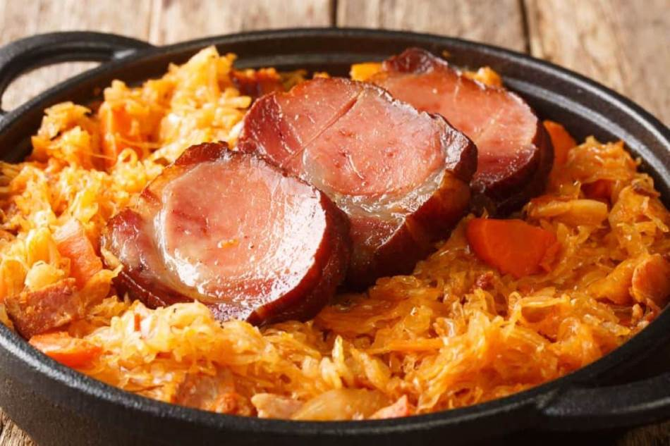

Recept za podvarak

Podvarak/ Baked Sauerkraut
During the winter months, sauerkraut or pickled cabbage is consumed regularly in Balkan households. It’s used to make many different traditional dishes such as Sarma, Kiseli Kupus sa Mesom, and Podvarak, a simple sauerkraut baked dish that is accompanied by delicious smoked meats that are also widely available in the winter.
Ingredients
- 1 large onion, diced
- 1/2 cup (100 ml) oil
- 1 large head of pickled cabbage, sliced thinly (or 3 – 2 lb bags, drained)
- 1 teaspoon (3 g) paprika (aleva paprika)
- 4 bay leaves
- 1 teaspoon (6 g) Vegeta seasoning
- 1 teaspoon (3 g) black pepper (biber)
- 2 cloves garlic, minced
- Water
- Smoked meat to taste (smoked ribs, bacon, etc.)
How to make
- Rinse your pickled cabbage. Place the thinly sliced cabbage into a large bowl of fresh cold water and let sit for 15-20 minutes before using. Do this if using sauerkraut in a bag as well.
- In a large deep, oven-safe pot, heat the oil on medium heat. Add the onion and saute until the onion is soft, about 5 minutes.
- Drain the water from the cabbage. Then, using your hands, squeeze all the remaining water from the cabbage and transfer it to the pot. Stir to combine all the ingredients well.
- Add in the paprika, black pepper, Vegeta seasoning, garlic, and bay leaves. Stir. Continue cooking everything together on medium heat for about 5 minutes or until the sauerkraut slightly softens.
- After the cabbage has softened, arrange your meat of choice on top of the cabbage. Pour enough water into the pot to just cover the cabbage. Continue cooking on medium heat for 1 hour.
- After one hour, transfer your pot to a 400 F / 200 C oven and bake for 30 minutes.
- Serve immediatly.